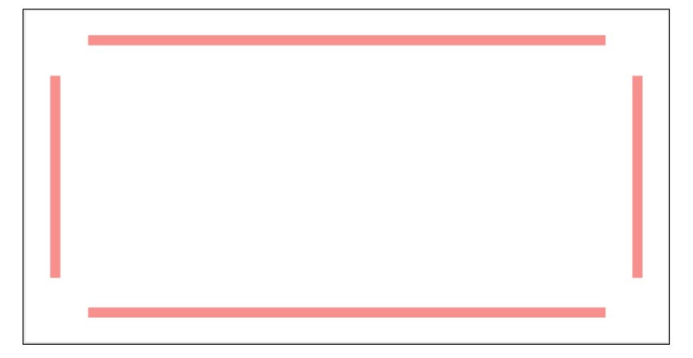
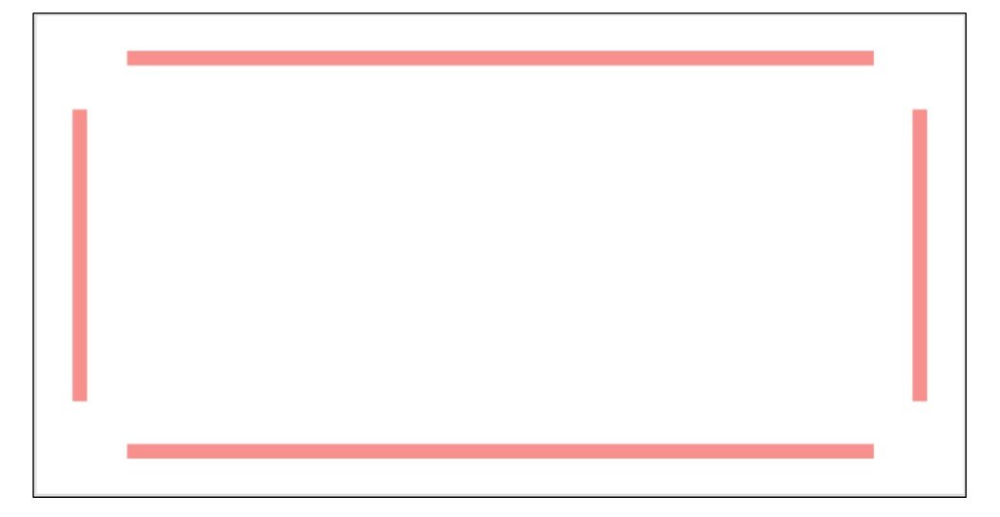
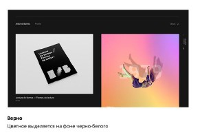
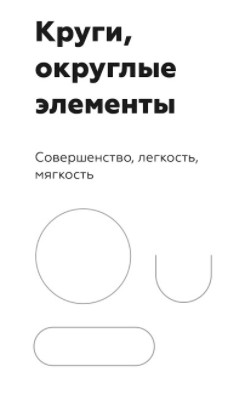
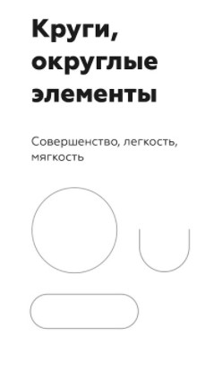

Мой Справочник | WEB-DESIGN | Прототип (UX)
UX-дизайн (User Experience)
Опыт пользователей (по сути это создание продуманного прототипа сайта для удобства пользователя), проектирование интерфейса, логика сайта, продумывание каждого шага пользователя, карта сайта, акценты в блоках для заинтересованности пользователя, последовательность блоков, путь пользователя при использовании сайта.
Рекомендации:
- Эскиз разрабатываемого сайта, который составляется вместе с ТЗ, либо после него. На его основе далее разрабатывается основной макет сайта.
- Прототип состоит из блоков, нужно определиться какие блоки и сколько их будет на каждой странице.
- Уже на этапе прототипа нужно думать об общей сетки страницы (1-кол, 2- кол, 3-кол).
- В протипе уже должна быть заложена общая композиция каждого блока страницы
- Композиция в идеале должна разрабатываться уже с учетом выбранной дизайн-концепции
- Сперва советуем вам построить прототип на бумаге / в уме, а затем уже в соответствующих программах или онлайн-сервисах.
- “Проще использовать ластик на редакционной доске, чем кувалду на строительной площадке” (Френк Ллойд Райт)
- Блоки в идеале не должны быть сильно высокими, чтобы пользователь мог видеть видимый разрыв между ними (до 700-850px для full-hd)
- Расположение элементов на прототипе может отличаться от расположения на готовом дизайне, главным является их наличие
Главный экран
Главный экран - верхний блок главной страницы это лицо сайта. Должен отражать основную суть сайта и отвечать на вопросы: "Куда я попал? Что это за сайт? Что здесь предлагают?" Правило 5 секунд
Оформление главного экрана создаёт общий тон в дальнейшей разработке дизайна сайта. С него начинается макет и задаётся общая дизайн-концепция. САМЫЙ ВАЖНЫЙ БЛОК!!!
Не стоит размещать слишком много информации на главном экране, не перегружайте пользователя; стоит понимать, что больше, не значит качественнее;
Используйте хорошо продуманный контент (качественные фотографии, грамотные заголовки, емкие подзаголовки, нужные кнопки и понятное меню)
Можно предлагать заказчику 2 и более вариантов главного экрана, когда нет четкого педставления в понимании дизайн-концепции, чтобы он мог сделать выбор уже по готовому дизайну. (как вариант шрифт с засечками - без засечек, монохром - цветной, минимализм - загруженный)
Начинать разработку дизайна нужно именно с главного экрана, чтобы начала вырисовываться основная концепция и потом отталкиваться в дальнейшей разработке от этого главного экрана
- Изображение (тематическое, дожно вызывать эмоции, должен быть акцент). Может быть:
- Оверлейным (текст поверх всего изображения, при этом само изображение либо затемняется, либо засветляется)
- Фоновым с акцентной областью, которая не перекрывается тексом (без затемнения или осветления)
- Отдельно-стоящим (вырезанным или прямоугольным)
- Декоративные вставки или текстура
- Зaголовок (должен быть акцент). Он не должен быть очень длинным (1-5 слов). От 40 до 100px.
- Подзаголовок (optional)
- Текст ознакомления (это буквально 2-3 предложения, которые максимально коротко и лаконично описывают то, чем занимается компания, или для чего создан данный сайт. От 16 до 24px)
- Кнопка призыва к дейсвию (CTA - Call to action)
- Шапка сайта с меню
- Форма заявки или расчета (optional)
- Контактные данные (optional)
- Главный экан может быть со слайдером
Типичные блоки и их названия:
- Header
- Логотип (размещать всегда слева, имеет акцент)
- Поиск
- Бургер
- Меню сайта или ссылки для блоков
- Призыв к действию (Кнопка формы, номер телефона, email, размещать лучше справа)
- Menu или Sidebar
- Внутри хэдера или отдельно (Ссылки должны быть по акценту на последнем месте после логотипа и кнопки, лучше их делать меньшим кеглем, нежирным прописным начертанием)
- Контентная часть (Основная информация)
- Footer (как правило имеет более тёмное оформление)
- Ссылки на соц. сети
- Копирайт
- Лого
- Соц сети
- Шаринг
- Контакты
- Модальные окна
- Главный экран (Презентационный блок, обычно идет после шапки на главной странице и должен вкраце пояснять кто мы и что мы умеем)
- Блок преимуществ (почему нужно обращаться именно к нам, бонусы)
- Наши технологии
- Портфолио (наши работы, слайдер или галерея)
- Контакты (как с нами связаться, где мы находимся, график работы)
- О нас (немного слов о компании)
- Наша команда (немного слов о людях)
- Услуги (что мы умеем)
- Расчет стоимости
- Акция, скидки, спец. предложения
- Галерея (часто в виде слайдера или плитки)
- Отзывы (как правило, в конце страницы, лучше видео)
- Католог
- Карточка товара
- Цены
- Форма заявки
- Заголовок
- Подзаголовок
- Описание
- Фоновое изображение
- Видеофон
- Картинка
- Кнопка
- Иконки
- Ссылки
- Внутренние подблоки
- Элементы анимаций
- Поисковое поле
- Форма, элементы формы
Базовые элементы:
Блоки:
Состав блока:
Типичные страницы:
Название может дублироваться с блоками
- Главная страница (главный экран, лицо сайта, должно цеплять и выглядеть интересно)
- Каталог
- Услуги
- О нас
- Контакты
- Портфолио (наши работы)
- Команда (наши работники)
- Наши награды
- Личный кабинет (страница профиля)
- Корзина (покупки)
- Оплата
- Отзывы
- Фото-, видеогалерея
- Наши технологии
- Стоимость, цены
- Форма заявки
Инструменты для разработки прототипов:
Whimsical - Online editormarvelapp.com - Создание интерактивного прототипа
Invisionapp Freehand - Online editor
Balsamiq Mockups 3
16 инструментов для создания прототипов (ссылка)

КОМПОЗИЦИЯ
Рекомендации:
- при выборе композиции всегда отталкивайтесь от типа и количества контента (текст на фото нужно размещать так, чтобы его было видно; большие блоки текста нужно разбивать на абзацы и располагать с левой стороны макета и т.д.).
- у всех элементов сайта должно быть свое место, которое знакомо пользователю по опыту (например, меню находится вверху сайта, кнопка размещается только после какого-то текста, который подготавливает пользователя к клику).
- не изобретайте велосипед, всегда смотрите на готовые композиционные решения уже созданных сайтов и перенимайте их опыт.
- Нужно оставлять пространство ("воздух") для контента слева-справа, сверху-снизу, чтобы не было заграмажденности
- Элементы в идеале не должны быть сильно большими, лучше отталкиваться от меньших размеров
Задачи композиции
- Поймать ВНИМАНИЕ (Визуальная доминанта). Цвет, размер, контраст, пространство
- Задать направление (Иерархия заголовков, объектов, направление чтения )
- Упорядочить (Выравнивание, сетка)
Визуальная доминанта - точка в композиции, которая однозначно цепляет ВНИМАНИЕ. Должна быть однозначной. Акцент. Заголовок, рисунок, цвет, пространство, контраст
Акцентные области. ЯКОРИ
 

КАК СОЗДАВАТЬ ДОМИНАНТЫ
- Размером. Чем больше - тем заметнее. Контраст размеров
- Цветом. Выделение контрастным цветом
- Простраство. Усиливает фокус внимания. Отступы. Якорные области
- Иерархии заголовков. Самое важное большое, остальное - меньше
- Иерархии объектов. Важные объекты должны выделяться размером
- Фоном. Можо объединять или разделять отдельные смысловые элементы, выделять важные
- Сетка, модульность. Создаёт порядок, ритм
-
Размер

-
Контрпространство

-
Выделение цветом
 -
Выделение размером

ХОРОШИЙ ДИЗАЙН выделяет ГЛАВНОЕ и ПОДЧИНЁННОЕ, создаёт ИЕРАРХИЮ объектов, помогает пользователю найти свой путь

ГЕОМЕТРИЯ
Формы


 

Фигуры в макете
Точка •
В типографике можно рассматривать любой элемент небольших размеров (кнопка, иконка, логотип, отдельные буквы и цифры). Имеют только один фокус внимания. Круг - частный случай точки, самая "эгоистическая фигура", максимально притягивает внимание, максимальный ацкцент. Точечные объекты чаще всего располагают в ЯКОРЯХ.
Линия —
В типографике это строка, самый удобный, читабельный, скромный, спокойный и лаконичный элемент в вёрстке. Это заголовки, хэдэр, футер, невысокие блоки. Как якорный объект строка лучше всего себя чувствует СВЕРХУ или СНИЗУ модуля.
Прямоугольник ▆
Универсальный контейнер для всех типов объектов: точечных, строчных и прямоугольных.
Теория близости
Объекты, расположенные близко друг к другу, рассматриваются ближе и по логике и по смыслу
Геометрия должна направлять пользователя, должно быть ощущение СКРОЛЛИНГА сайта
Золотое сечение (пропорция Φ)
Это такое деление целого на 2 части, при котором отношение БОЛЬШЕГО / МЕНЬШЕМУ = ЦЕЛОГО / БОЛЬШЕМУ ≈ 1.618
Это такое деление целого на 2 части, при котором отношение МЕНЬШЕГО / БОЛЬШЕМУ = БОЛЬШЕГО / ЦЕЛОМУ ≈ 0,618
1 = 0.618 + 0.382 ≈ 62% + 38%;
Φ = 0.618 / 0.382 = 1.618;
Φ2 - Φ = 1;
Если нужно найти БОЛЬШУЮ часть, то значение ЦЕЛОГО нужно поделить на Φ (либо умножить на 0,618)
Если нужно найти МЕНЬШУЮ часть, то значение ЦЕЛОГО нужно поделить на Φ2 (либо умножить 0,382)
Последовательность Фибоначчи:
Каждый следующий член ряда равен сумме двух предыдущих. При этом отношение членов этого ряда будет стремиться к Φ
1 + 1 + 2 + 3 + 5 + 8 + 13 + 21 + 34 + ... + n + (n+1) + ...;
(n+1):n ---> Φ
КОПИРАЙТИНГ
Основные принципы информационного стиля (Инфостиля)
- Максимум ИНФОРМАТИВНОСТИ, минимум "воды"
- Текст должен быть ИНТЕРЕСНЫЙ, нешаблонный. Должно быть интересно читать пользователям
- Должен быть честный. Никакого самовосхваления и самолюбия
- Должен передавать СУТЬ
- Качественные прилагательные неэффективны (
Дорогойкитайский шёлк) - Не должно быть слов-УСИЛИТЕЛЕЙ (
реально, честно, на самом деле, без обманаи т.д.) - Паразиты времени (
В наши дни, сейчас, в настоящий моменти т.д.) УБРАТЬ, всё и так происходит сейчас - Если заказчик может предоставить все тексты уже на этапе проектирования, то используйте их - это поможет вам сразу расставить все текстовые блоки на свои места.
Полезное
https://glvrd.ru/ — новый сайт
https://retro.glvrd.ru/ - старый сайт
yandex.ru/referats - рыбный текст
fish-text.ru/ - ещё рыбный текст
Книга Ильяхова - Пиши, сокращай (полезна для копирайтинга)